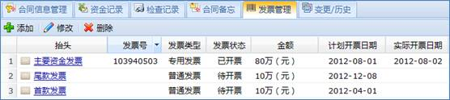
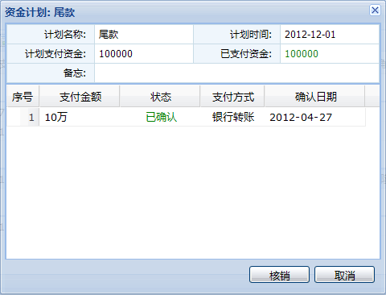

合同管理模块实现了合同的管理功能。包括合同基本信息，客户供应商管理，产品服务管理，财务管理四个子功能模块。
点击查看如何管理一份合同？
合同管理模块有合同，客户供应商，产品服务以及财务四个标签页。系统管理员需要为用户分别授权才能看到这四个标签页的内容。通常情况下，项目经理拥有“合同”，“客户/供应商”，“产品/服务的权限”，而财务人员拥有“财务”权限。
客户/供应商模块主要实现对合同签署的另一方，即客户或供应商信息的管理。客户包括商业客户，项目客户和其他客户。供应商包括产品供应商，服务供应商，广告供应商，包装供应商以及其他供应商。用户可以根据实际需求在标准维护里修改客户/供应商的类别。
客户/供应商管理包括客户/供应商的添加，删除，修改和查询；客户/供应商信息管理等功能。
4.10.1.1 客户/供应商列表
客户/供应商列表按类别列出了所有客户/供应商名称。可以通过操作“添加”，“删除”按钮添加和删除客户/供应商。可以通过关分类查询客户/供应商信息。添加客户/供应商界面如下图所示：
图 添加客户/供应商
4.10.1.2 客户/供应商信息
客户供应商信息页面包括客户/供应商信息，联系人列表，附件列表。
点击“修改”按钮可以修改/供应商信息。
点击“信誉评级”按钮可以评价客户/供应商信誉等级。
点击“添加”按钮可以为客户/供应商添加多个联系人。
点击“上传”按钮可以为客户/供应商添加多份附件。
切换到备忘标签页可以为客户/供应商记录多份备忘信息。
图 客户/供应商信息
产品或服务是合同的标的物。产品/服务管理模块实现了产品/服务信息的管理。
点击“添加”，“修改”或“删除”按钮可以添加，修改或删除产品/服务信息。添加产品/服务界面如下图所示：
图 添加产品/服务
输入关键字，可以查询相关的产品/服务。所有的产品或服务分类罗列在产品/服务列表中。如下图所示：
图 产品/服务列表
合同基本管理包括合同列表以及合同信息两部分。合同列表中包含了合同列表以及一些辅助功能，合同信息包含了合同信息管理，资金纪录等合同信息管理功能。
4.10.3.1 合同列表
合同列表包括合同列表展示；添加、删除合同，合同授权，合同变更，定期提醒，合同查询以及输出合同报表功能。
可以选择过滤条件来显示希望查看的合同。
过滤条件一：勾选或不勾选“未发布”，“执行中”，“已终止”。
过滤条件二：选择“全部合同”、“甲方合同”、“乙方合同”或“丙方合同”。
在合同列表中，不同类型、不同状态的合同以不同的图标区分显示。合同列表界面如下图所示：
图 合同列表
4.10.3.1.1 添加/删除合同
通过点击按钮，可以添加和删除合同。在合同信息中点击“修改”按钮可以修改合同基本信息。添加合同界面如下图所示：
注：合同发布后将不能再修改合同信息，如想修改，只能变更合同。
图 添加合同
4.10.3.1.2 合同授权
在合同列表工具栏点击按钮或右键菜单项可以打开合同授权界面。每个合同均包括“合同权限”“财务权限”两种权限。
合同权限包括“读”、“写”两种权限，默认为“读”。拥有“写”权限的用户才可以编辑合同信息。
财务权限包括“无”、“查看”、“处理”三种权限，默认为“无”。拥有“查看”权限的用户才能查看合同财务相关信息，拥有“处理”权限才能处理合同财务。
合同授权界面如图所示，双击可修改用户权限。
图 合同授权
4.10.3.1.3 合同变更
执行中的合同(已发布)不允许修改，如若希望修改必须执行合同变更。点击合同列表工具栏的按钮或右键菜单项可以执行合同变更。变更后的合同修改并发布后，旧版本的合同将自动终止。
4.10.3.1.4 定期提醒
点击合同列表工具栏的按钮或右键菜单项可以设置合同定期提醒。合同提醒包括合同到期提醒、合同支付提醒以及合同检查提醒。设置提醒后，到了指定日期系统会自动发送提醒邮件至用户信箱提醒用户。合同提醒设置界面如下图所示：
图 合同提醒
4.10.3.1.5 合同查询
系统提供了高级检索功能，细化检索条件，方便用户精确查找希望查看的合同。合同查询界面如下图所示：

图 合同查询
4.10.3.1.6 输出合同报表
点击合同列表工具栏的 按钮或右键菜单项可以输出合同报表。合同报表界面如下图所示：
按钮或右键菜单项可以输出合同报表。合同报表界面如下图所示：
图 合同报表
4.10.3.2 合同信息
合同信息管理包括合同基本信息，资金纪录，检查记录，合同备忘，发票管理以/历史功能。
4.10.3.2.1 合同信息管理
合同信息包括合同基本信息，标的物列表，资金计划列表，检查计划列表，附件列表。合同基本信息界面如下图所示：
图 合同信息
在标的物列表点击添加、修改、删除按钮可以添加、修改和删除标的物信息。添加标的物界面如下图所示：
图 添加标的物
在资金计划列表点击添加、修改、删除按钮可以添加、修改和删除资金计划信息。添加资金计划界面如下图所示：
图 添加资金计划
在检查计划列表点击添加、修改、删除按钮可以添加、修改和删除检查计划信息。添加检查计划界面如下图所示：
图 添加检查节点
在附件列表点击添加、删除按钮可以添加和删除附件。
标的物列表、资金计划列表和检查计划列表如下图所示：
图 合同附加信息
4.10.3.2.2 合同发布与终止
点击合同信息右上角的“发布”按钮可以发布合同。合同发布后可以处理资金记录，检查记录，合同备忘等信息。
发布了的合同，点击右上角的“终止”按钮可以终止合同。终止合同时选择终止原因及终止日期等信息。合同终止后将不再生效，所有财务，提醒等功能将不再有效。
4.10.3.2.3 资金记录
资金记录管理的是实际资金拨付信息。点击“添加”，“修改”，“删除”按钮可以添加，修改或删除资金记录。每笔资金记录都对应一个资金计划，财务核对时资金纪录和资金计划数额一致才能核销资金计划。添加资金纪录界面如下图所示：
图 添加资金记录
资金记录列表如下图所示：
图 资金记录列表
4.10.3.2.4 检查记录
在检查记录界面可以查看检查记录列表，并录入检查结果。检查记录界面如下图所示：
图 检查记录
录入检查结果界面如下图所示：
图 录入检查结果
4.10.3.2.5 合同备忘
可以在合同备忘页面为合同添加若干备忘信息。
4.10.3.2.6 发票管理
发票管理提供了发票添加、修改和删除的功能。发票列表如下图所示：

图 发票管理
4.10.3.2.7 变更/历史
在变更历史界面可以查看合同的各历史版本，并能比较不同版本的差异。选择两个不同版本的合同并点击“合同版本变更比较”按钮可以查看这两个版本的合同的变化。合同版本列表如下图所示：
图 合同版本列表
财务管理模块主要实现合同财务管理功能。财务模块包含“待办”和“全部”两个界面。在“待办”界面列出了财务任务需要处理的收款，付款以及发票信息。而在“全部”界面，能查看并处理全部财务功能。
4.10.4.1 财务待办
财务待办包括了收款资金确认，付款资金确认，发票确认三项功能。
收款及付款直接确认就可以，发票确认时需要输入发票号以及开票日期。开具发票界面如下图所示：
图 开具发票
财务待办界面如下图所示：
图 财务待办
4.10.4.2 财务全部
财务模块全部页面，可以选择一个合同，并处理其相应的财务信息。界面如下图所示：
图 财务全部
4.10.4.2.1 资金记录列表
资金记录列表实现的功能有资金确认，计划核销，财务报表以及设置汇率。资金确认和财务待办中资金确认功能是一样的。每个计划批次确认的资金和计划的资金一致时便可以核销计划。点击资金记录列表工具栏的“计划核销”按钮将弹出计划核销界面，如下图所示：

图 计划核销
资金记录列如下图所示：
图 资金记录列表
点击资金记录列表工具栏的“财务报表”按钮将弹出合同选择界面，选择要输出报表的合同并点击“继续”按钮可以生成所选合同的财务报表。界面如下图所示：
图 财务报表
点击资金记录列表工具栏的“设置汇率”按钮将打开汇率设置界面，如下图所示：
图 设置汇率
4.10.4.2.2 发票列表
发票列表实现开具发票功能，点击发票列表工具栏的“开具发票”按钮即可打开开具发票界面(和财务待办中开具发票功能一致)。发票列表如下图所示：
图 发票列表